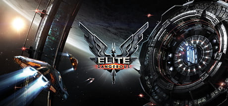
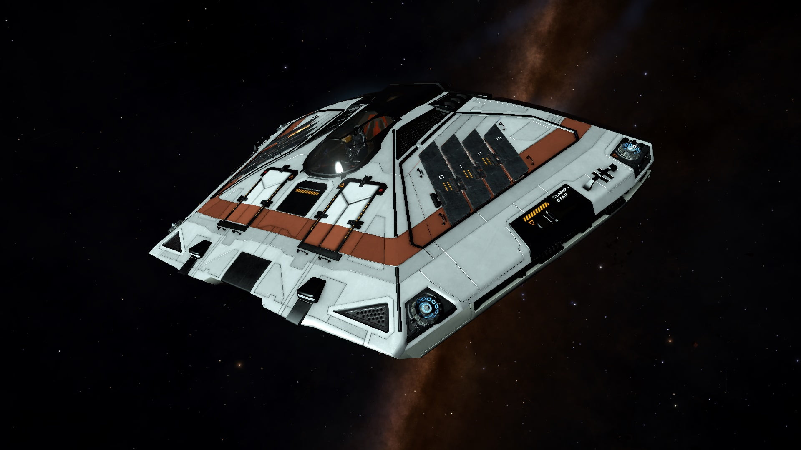
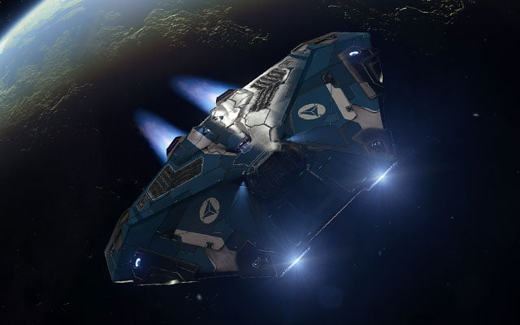
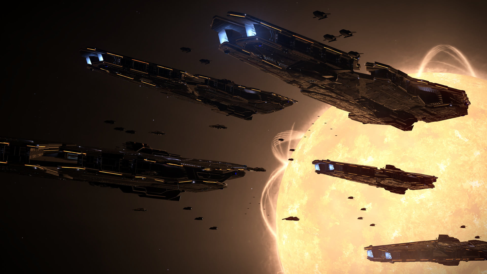
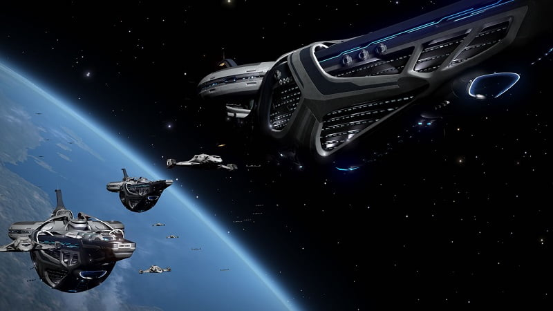
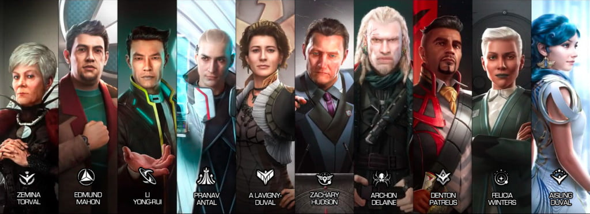
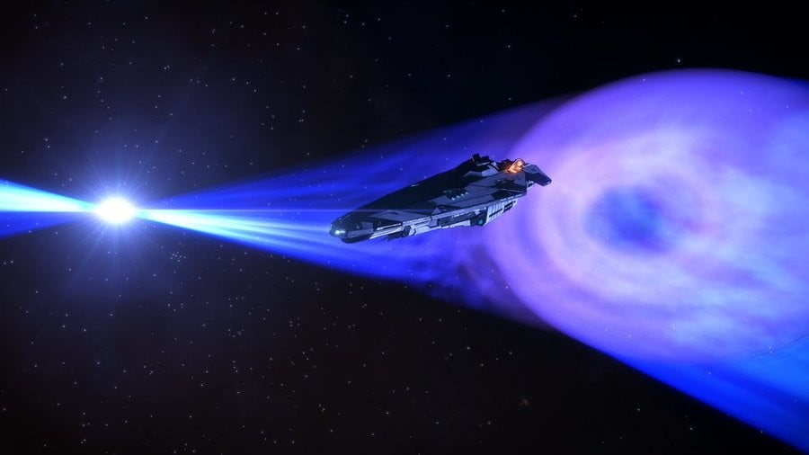
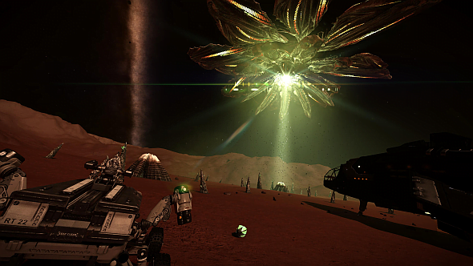

This is an archive of Drew Wagar‘s lore guide, available here with his kind permission. Drew is no longer actively maintaining his lore pages, and they may not be accurate post v2.4 of Elite Dangerous.
Welcome to the wonderful universe of Elite Dangerous, PS4 players!
I’m an official author for the game – as such I’ve done a bit of work on making the lore of Elite Dangerous accessible. When you’ve read what’s below, you can start to delve into my (work in progress!) lore pages too.
The Elite franchise has been around since 1984 and the Elite Dangerous game is the fourth in the series. As a result there is an abundance of background detail, thousands of websites and millions of forum and reddit threads discussing every detail. Trying to make sense of all this could well be overwhelming, so a summary may prove helpful.
Welcome to the universe and, as we say around these parts… Right on, Commanders!
Drew.
The year is 3303.

After centuries of strife, humanity has hyperspace travel and has colonized an area perhaps 400 light years in radius beyond our Solar system. In these ‘core worlds’ (or the ‘bubble’ as many now refer to it) humanity carries on its business. There are stations, vessels, outposts and all that goes with them: politics, conflict, trade, piracy, bounty hunting and war. Beyond civilised space lies the ‘Frontier’, the largely unexplored vastness of the galaxy. Out there are far flung colonies, mysterious wrecks and astronomical sights to wonder at. There are rumours of aliens too.
The universe is a dangerous place. Humanity’s darker side is prevalent out in the void and justice is often dispensed by the business end of weaponry.
Spacecraft ownership is common. Millions of pilots have taken to the void, flying between systems in a bid to raise money to improve their lot. Money remains the primary means to barter across systems, with universally accepted ‘credits’ the medium of exchange. As you join the game you’ll find yourself in receipt of a handful of credits and a basic ‘Sidewinder’ vessel. (Many ships in the Elite Dangerous universe are named after snakes). It is not a bad little ship, but limited range, storage capacity and inability to defend itself against stronger foes will tempt you into a larger vessel before long.

To gain credits you need to work. Trading is a sensible way to start, buying low and selling high. Missions may be available too, but you’ll find that those who offer them require a certain reliability from you before they’ll entrust you with the more lucrative jobs. You may consider bounty hunting, but you’d be advised to wait for that more potent ship before you rely on your weapons…
Pilots are rated in a number of ways; their trading, exploration and combat prowess being assessed on a scale. In combat you start out as ‘Harmless’. If you survive your first few altercations you may achieve the moniker of ‘Mostly Harmless’. From there it’s a progression, perhaps one day you’ll reach the heady heights of the ‘Elite’. Some may decide that violence is not for them and pursue a more peaceful route to riches. You decide, no one is going to tell you what to do.
However, a little guidance might be helpful. If your desire is to blaze a trail through the shattered wrecks of your enemies, we might suggest the Vulture as a worthy ship. Subtle it is not, but it’s a fighter through and through. If exploration is your thing, you’ll be wanting the Asp (in its explorer form). If trading, start with a Hauler and work your way up to Type-6 transporter. Of course, it’s early days to be making such a choice of career. If you’re yet to decide perhaps a ship that can do a little of everything? You can’t do better than the Cobra Mk3.
Perhaps the definitive Elite Dangerous ship, the Cobra Mk3 combines speed, with enough firepower, storage and versatility to give flexibility in career choice. It’s not the best at anything, but it can do all of them well enough. It’s remarkable modular design makes it straightforward to fit out for any task. Many pilots, even with a surplus of credits, don’t fly anything else other than this iconic ship.

Ships have core componentry. Frameshift drives propel you across the light years. Lasers and kinetic weapons serve as offense. Shields and armour protect your vessel from hostile attack. Other equipment can supplement all this, making docking easier, or giving the ability to scoop fuel from stars. Bigger ships clearly have more space, but a smaller ship is quicker, more agile and less of a target. Many ships are optimised for certain tasks. Choose carefully.
Never forget the golden rule though. Accidents can happen, your ship can be destroyed in many ways. Insurance will cost you dear so… “Never fly without rebuy.”
Ships are also provided in very basic spec. You may wish to ensure you have sufficient credits to upgrade them effectively prior to launching from the dock.
Once you’ve established yourself you’ll begin to wonder about the politics of the universe you’re in. For the most part you can ignore this if you wish, but a brief overview may serve to ground you. You can undertake missions for political powers, and thus gain their affection. Working for one may make you less welcome in the others, so make your choice carefully.
The Federation is the oldest superpower, centred around Sol (our original home, where Earth still orbits). It is a vast conglomeration of corporations. Capitalism reigns here, excessive consumption, greed and materialism remain the underpinnings of this society. There is boundless wealth and crushing poverty, often side-by-side. Presidential in style, the Federation is the largest human power in the galaxy.

Its ancient rival, of a thousand years, is the Empire centred around the Achenar system. Founded in controversy it is a radically different society, with rank and role being extremely stratified. Above all the Emperor rules; below her are the Senators, the Patrons, the Clients and the Citizens. Finally there are slaves, they that work to keep the economies of the Empire afloat. Imperial design is suave and impressive. Society is flamboyant. Who you know matters more than anything. Bloodlines and breeding count for more than credits.

The Alliance is the third, formed in the last century or so, mostly out of resistance to the other two. Its authority is based out of the Alioth system and offers an alternative to the capitalism of the Federation or the hegemony of the Empire. They claim freedom and self-determination as their founding principles.
Certain vessels may required you to offer service to these superpowers and to gain rank with them. You may be called upon to actively undermine the others in pursuit of such a rank, so your decisions may have future ramifications.
You can also pledge allegiance to their representatives and join the play for power. Such choices will bring you rewards, but highlighting your political opinions in this manner will make you a target for others who do not share your views…

You may find it easier to keep your politics at a local level. In every system there are the so-called ‘minor factions’ who vie for control of the local space stations within a system. Many of your fellow pilots will be members of these and co-ordinate their actions to attempt to leverage the economy. Work for them and you’ll receive preferential treatment and exclusive missions. As ever, aligning yourself with one faction may make you an enemy in the eyes of others.
The further you go the more you’ll encounter. After a while you may receive invitations from other inhabitants of the void. The ‘Engineers’ are one such group, who offer bespoke upgrades to your vessel in exchange for materials and credits. If you want your ship to be the best at what it does, you’ll need to visit these intriguing folk.
If trading and fighting do not appeal, perhaps the void itself will call. Explorers have ventured across the galaxy, but only the tiniest percentage of the galaxy has been explored. Out there lies the unknown; billions of planets, countless nebulae, and all manner of astonishing sights. There is danger too, neutron stars and black-holes are the obvious ones, but the lone explorer, far from help is especially vulnerable. If you go far from home, make sure your ship is ready for the long haul. A breakdown that would be trivial close to the repair yards of a station might prove fatal a thousand light years out into the blackness. Return your exploration data and you will be paid, handsomely if you discover an Earth-like world, plus there’s a chance to get your name upon the galactic map if you’re the first to discover something new.

And, just maybe, you’ll uncover the mysteries that haunt the darkness. For hundreds of years there have been rumours filtering back from the depths of space. Raxxla, perhaps a planet lost in the void with hidden treasures. Generation ships that left Earth long ago. An alleged conspiracy regarding the activities of the superpowers was recently exposed, resulting in the death of a infamous young woman. Beyond all this are rumours of alien vessels that roam the void, ambushing commanders.

What you will do remains your choice. You blaze your own trail. Take risks or play it safe. There’s no right or wrong.
We’re looking forward to seeing you in the void on June 27th, PS4 commanders.
Fly safe… and if you can’t… fly dangerous!
Further reading/viewing:
Recommended official books set in the Elite Dangerous universe that give a flavour to the game environment:
Can’t get enough of the game, try out the official upcoming RPGs:
In addition to Drew’s Reading list above you may also want to consider the following books.